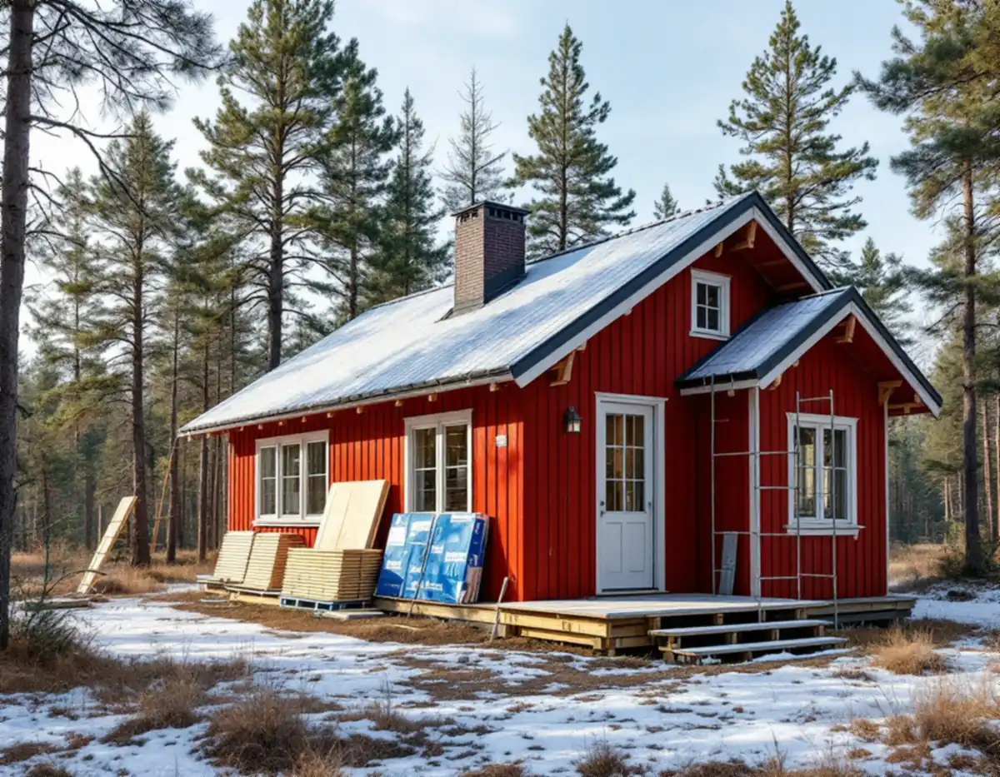
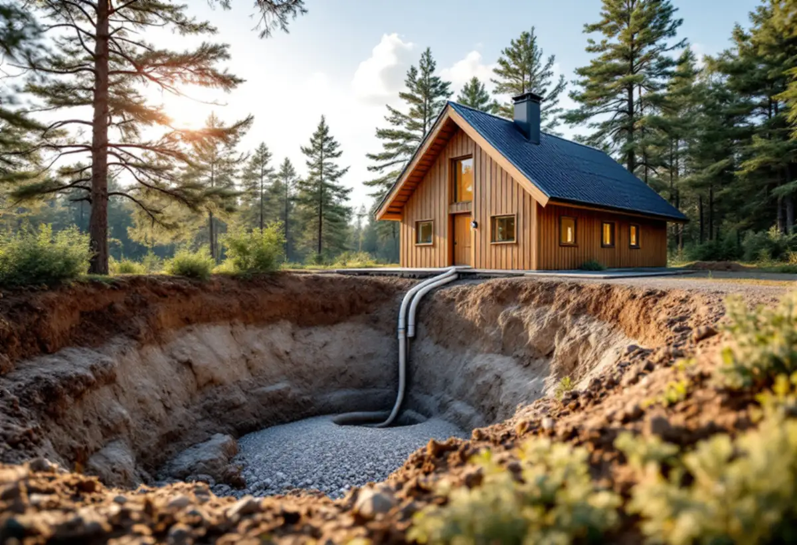
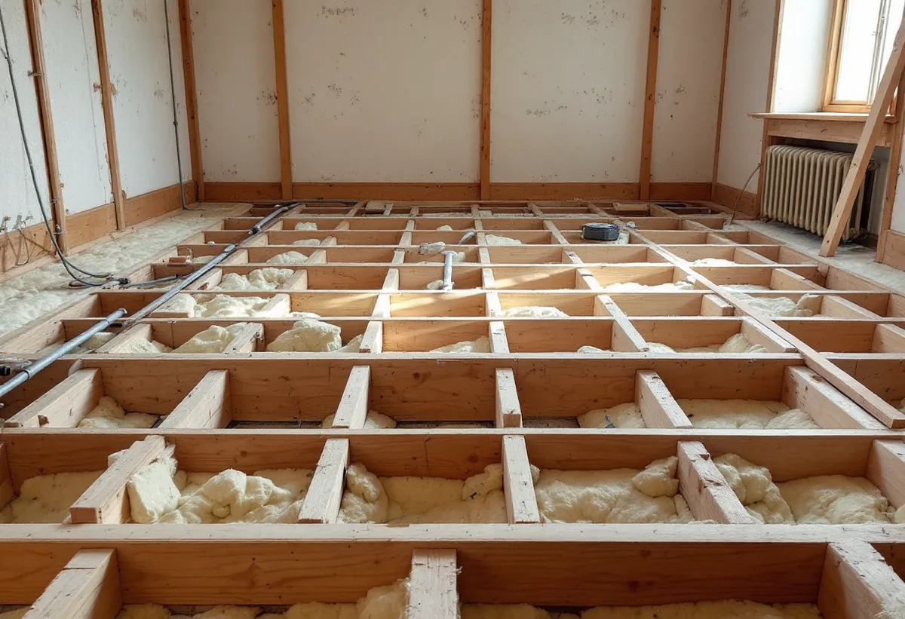

Platsbesök
Stomme, vatten, avlopp, värme och detaljplan går vi igenom.
Utanför tätorten i Österåker blir fritidshusområden permanentboende, och hus som byggdes för sommaren ska fungera året runt. Geal Entreprenad AB totalrenoverar villor och fritidshus i Österåker och planerar vatten, avlopp och värme från början.

Österåkers kommun beskriver sig som en kommun som expanderar snabbt, där flera områden utanför tätorten utvecklas från fritidshusområden till mer permanent boende. I vissa av dem finns ännu inget kommunalt vatten och avlopp, och då måste de boende ha eget avlopp och egen brunn.
Roslagsvatten har hand om det kommunala vattnet och avloppet och utökar antalet anslutna områden. Kommunens VA-plan innehåller en gemensam utbyggnadsplan för det allmänna nätet och en strategi för de enskilda anläggningarna, och i mars 2025 antog kommunfullmäktige kommunens första vattentjänstplan.

Österåkers kommun listar åtgärder som kräver anmälan även när de inte kräver lov: installation av kamin eller eldstad, installation eller väsentlig ändring av vatten och avlopp i en byggnad, ändring av bärande väggar och balkar, nya eller förändrade rördragningar inne i bjälklag, ändring som väsentligt påverkar brandskyddet, ny eller ändrad ventilation och stambyte.
Till anmälan hör ett förslag till kontrollplan och de handlingar som behövs, till exempel VA-situationsplan, konstruktionsritningar, planritning, VVS-ritning och brandskyddsdokumentation. Arbetet får inte börja förrän startbeskedet har kommit. I en totalrenovering hamnar ofta flera av punkterna i samma anmälan.
En värmepump som hämtar värme från berg, jord, sjövatten eller havsvatten måste först anmälas till kommunen, medan luftvärmepumpar inte är anmälningspliktiga. Inom ett vattenskyddsområde krävs tillstånd, ska borrhålet ligga nära en kommunal dagvattenledning ska det anmälas till Roslagsvatten, och värmeutvinning ur grundvatten är inte tillåtet i Österåker.
Borrvatten och borrkax får inte ledas till avloppsnätet utan rening. Vid borrning ska SGU:s standard Normbrunn 16 följas, och normen anger också regler om avstånd till andra brunnar. Vi dimensionerar värmesystemet efter det renoverade huset, inte efter fritidshuset det var, och planerar borrhål och ledningar så att de passar husets nya planlösning och värmesystem.
Från den 1 december 2025 gäller nya regler i plan- och bygglagen. Fler åtgärder är bygglovsbefriade, men kommunen granskar inte dina planer innan du börjar bygga, och du ansvarar själv för att det du bygger uppfyller kraven. Bygger du fel kan kommunen ingripa i efterhand med byggsanktionsavgift eller krav på rivning.
Kommunen råder dig att först kontrollera detaljplan, kulturmiljö och strandskydd, och den som är osäker kan söka frivilligt bygglov. Om badrummet kan du läsa under badrumsrenovering i Österåker, och om tjänsten i stort under villarenovering.
Alla småhus som säljs ska ha en energideklaration, och den innehåller förslag på åtgärder som sänker energianvändningen utan att försämra inomhusmiljön, skriver Österåkers kommun. Deklarationen gäller i tio år, och husägaren ansvarar för att den görs och godkänns.
Solceller på fasaden eller taket kan kräva bygglov. Kommunen råder dig att kontakta elnätsägaren, i Österåker E.ON, innan du tar in offerter, och påpekar att solceller kan ge skattereduktion för grön teknik. Ska taket ändå göras om i totalrenoveringen planerar vi infästningar och kabelvägar samtidigt.

Stomme, vatten, avlopp, värme och detaljplan går vi igenom.
Anmälan och kontrollplan för VA, bärande delar, ventilation och eldstad.
Stomme, VVS, värme, el och ytskikt står var för sig.
Det gamla rivs och materialen sorteras.
Stomme, isolering, VVS, värme, el och ytskikt i rätt ordning.
Kontrollplanen fylls i så att slutbesked kan ges.
Rotavdrag ges för en bostad som du äger och bor i eller använder som fritidsbostad. På småhus räknar Skatteverket bland annat ombyggnad av planlösningen, tilläggsisolering, vatten- och avloppsledningar och installation av värmepumpar som rotarbete, men rotavdrag och skattereduktion för grön teknik kan inte ges för samma arbete.
Avdraget är högst 30 procent av arbetskostnaden och högst 50 000 kronor per person och år. Geal drar avdraget direkt på fakturan.
Husets storlek och skick, isolering, om vatten och avlopp ska dras om, värmesystemet, el och vilka ytskikt du väljer. Efter ett gratis platsbesök får du ett skriftligt kostnadsförslag.
Renovera hela huset eller lägenheten.
Villarenovering →Takbyte, takbesiktning och plåtarbeten.
Takläggare i Österåker →Svinninge, sommarvillor och sportstugor.
Takrenovering i Österåker →Uthyrning, kulturmiljö och fornlämningar.
Attefallshus i Österåker →VA-utbyggnad, öar och vattensmarta val.
Badrumsrenovering i Österåker →Rivning, markarbete och gatukostnader.
Byggföretag i Österåker →Sommarvillornas fasadkulörer.
Fasadmålning i Österåker →Skärgårdshus, fritidshus och villor i Österåker.
Fasadrenovering i Österåker →Varsamhet, kulturvärden och kustlägen i Österåker.
Fönsterbyte i Österåker →Sommarvillorna i Svinninge.
Fönsterrenovering i Österåker →Jämna golv och färre trösklar.
Golvläggare i Österåker →Golv i sommarhus som blivit bostad.
Golvslipning i Österåker →Helårshus, brunn och avlopp.
Köksrenovering i Österåker →Sommarvillor, röda stugor och efterkrigsvillor.
Målare i Österåker →Plåtdetaljer på sommarvillorna.
Plåtslagare i Österåker →Bryggor, altaner och äldre snickerier.
Snickare i Österåker →Lertegel, lovfrågan och återbruk av pannor.
Takbyte i Österåker →Sommarvillan blir åretruntbostad.
Tapetsering i Österåker →Grannmedgivande, strandskydd och utstakning.
Tillbyggnad i Österåker →